puericulturapeso · estatura · PCestado de saúdemedir sempre
?
Por que a primeira coisa que um bom pediatra olha numa criança não é a garganta — é o gráfico?
Por que o crescimento é o primeiro exame da criança
Da UTI neonatal ao ambulatório: o que é puericultura
Depois de dominar o recém-nascido — infecção neonatal, classificação do RN, icterícia, as complicações dos primeiros dias —, o olhar muda de cenário. Sai da maternidade e entra no ambulatório, onde a criança chega andando (ou no colo), crescendo, vivendo. Esse acompanhamento global da criança nos primeiros anos de vida tem nome: puericultura. Ela cobre a criança pequena, o pré-escolar, o escolar e a entrada na adolescência. E o tema que abre a puericultura é o crescimento e seus distúrbios.
Crescimento não é número, é estado de saúde
Aqui está a virada de chave que separa quem decora de quem entende: o peso e a estatura de uma criança não são dados burocráticos para preencher a caderneta. Crescimento é um indicador de estado de saúde. A criança que cresce bem tende a ser mais saudável, com menos complicações e menos quadros infecciosos de repetição. Quando o crescimento trava, ele está contando algo sobre o corpo inteiro — má absorção, doença crônica, problema social.
Os distúrbios do crescimento são comuns no consultório e caem em prova com frequência alta. Por isso vale o preço de entrada: existe uma leve decoreba de números do crescimento normal que precisa ser vencida primeiro. O raciocínio dos distúrbios flui sozinho depois — mas só fica de pé se os números estiverem firmes.
Os três parâmetros que você vai dominar
São três, e só três, os parâmetros que sustentam tudo: peso, estatura e perímetro cefálico. Cada um conta uma história diferente do mesmo corpo — o peso fala do agudo, a estatura fala do crônico e o perímetro cefálico fala do cérebro. Domine os três e nenhuma classificação nutricional te pega.
Interativo — os três parâmetros — vire cada cartão e veja o que cada um detecta melhor (agudo / crônico / cérebro). Clique, toque ou Tab + Enter para virar.
Por que medir SEMPRE, até no pronto-socorro
Tem uma armadilha de mentalidade aqui: muita gente acha que crescimento só se avalia na consulta de rotina. Errado. Peso e estatura se olham em qualquer atendimento — inclusive no pronto-atendimento e no pronto-socorro. O motivo é prático e poderoso: uma criança pode passar anos sem voltar ao pediatra. Se naquele único contato você olha o gráfico, flagra um distúrbio que ninguém mais ia pegar — e garante diagnóstico e encaminhamento. O olho no gráfico é barato; a criança que passa despercebida, não.
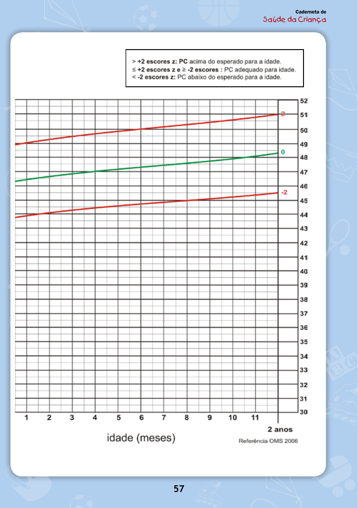
Achado: Caderneta de Saúde da Criança (MS) — gráfico Peso × Idade (0 a 2 anos), curvas de escore-z (preta ±3, vermelha ±2, verde 0), referência OMS 2006. Onde os três parâmetros viram um gráfico longitudinal.
Caderneta de Saúde da Criança, 12ª ed. Ministério da Saúde, 2023 · Material oficial do MS (público)
Quiz fixação
Duas questões para fixar o enquadramento.
A avaliação do crescimento de uma criança deve ser feita:
Por que cada alternativa:
C) Certa. Peso e estatura se olham em qualquer atendimento — inclusive pronto-atendimento e pronto-socorro. A virada: uma criança pode passar anos sem voltar ao pediatra; se naquele único contato você olha o gráfico, flagra um distúrbio que ninguém mais ia pegar. O olho no gráfico é barato; a criança que passa despercebida, não.
A) Limitar à puericultura agendada fecha a porta justamente no contato que pode ser o único da criança — é o erro de mentalidade que a página desmonta. Por que cair: a rotina ensina que crescimento "é assunto de consulta de puericultura", e quem fixou só o cenário ideal não estende o rastreio ao PS.
B) Inverte quem dispara o diagnóstico: o distúrbio de crescimento quase nunca é a queixa dos pais — é o achado de quem olha o gráfico mesmo sem reclamação. Esperar a queixa de peso é perder o caso. Por que cair: soa razoável "investigar quando há queixa", mas aqui a queixa é o ruído, não o sinal.
D) Erra a faixa etária: o crescimento se avalia desde o nascimento, não a partir dos 2 anos — é nos primeiros anos que a curva mais informa.
"Crescimento é apenas um dado numérico de acompanhamento." A afirmação é:
Por que cada alternativa:
B) Certa — a afirmação é falsa. Crescimento é um indicador de estado de saúde, não um dado burocrático para preencher a caderneta. A virada: a criança que cresce bem tende a ter menos complicações e menos quadros infecciosos de repetição; quando o crescimento trava, ele está contando algo sobre o corpo inteiro — má absorção, doença crônica, problema social. O gráfico é leitura de saúde global.
A) Tratar o crescimento como número que "serve só para preencher a caderneta" reproduz exatamente o erro de mentalidade que separa quem decora de quem entende. Por que cair: o peso e a estatura realmente são números anotados a cada consulta, e é fácil confundir o registro com o significado — mas o número é a porta, não o fim.
Caso-âncora · Josias
pré-escolar9,8 kg · 82 cmsinal × ruídopergunta-guia
Ambulatório de pediatria · pré-escolar
Josias, 2 anos e meio, chega por febre, tosse e coriza há 3 dias. O resfriado é banal. O que liga o alarme está na ficha, não na queixa: peso 9,8 kg.
Paciente
Josias, masculino, 2 anos e 6 meses (30 meses)
Queixa
febre, tosse e coriza há 3 dias
Exame
afebril, acianótico, anictérico, levemente hipocorado; FC 130, FR 30; roncos leves; abdome globoso, flácido, indolor, sem visceromegalia
Antropometria
peso 9,8 kg · estatura 82 cm
O caso que liga o alarme: Josias, 2 anos e meio, menos de 10 kg
A consulta inocente
A mãe, Sra. Altineia, leva Josias ao ambulatório por febre, tosse e coriza há 3 dias. No exame, ele está afebril, acianótico, anictérico, levemente hipocorado; FC 130, FR 30. Ausculta com leves roncos; abdome globoso, flácido, indolor, sem massa, sem hepatosplenomegalia. A Dra. Saraney levanta a hipótese de resfriado comum e prescreve sintomáticos. Para o quadro agudo — três dias de sintomas brandos de via aérea —, a hipótese é razoável. Resfriado é resfriado.
O dado que incomoda fora do problema agudo
Mas tem um número na ficha que não tem nada a ver com a tosse e que faz qualquer pediatra parar: peso 9,8 kg, estatura 82 cm. Uma criança de 2 anos e 6 meses com menos de 10 kg liga o alarme. Esse peso não combina com essa idade. O problema que trouxe Josias ao consultório (o resfriado) é o ruído; o achado de verdade está escondido na antropometria. É a lição clínica mais valiosa daqui: o motivo da consulta nem sempre é o que importa — quem olha o gráfico encontra o que a queixa não conta.
Interativo — a ficha de Josias — destaque o que incomoda e veja o par peso/estatura saltar do resto. Botão de destaque acessível; estado anunciado por leitor de tela.
A pergunta que organiza tudo o que vem
Daí nasce a pergunta-guia: qual é o diagnóstico do estado nutricional de Josias segundo o Ministério da Saúde? Responder a ela exige dois passos: (1) saber quanto a criança deveria crescer em cada período da vida; (2) classificar a criança aplicando os dados nos gráficos. Guarde Josias. Ele volta no fim, com diagnóstico fechado.
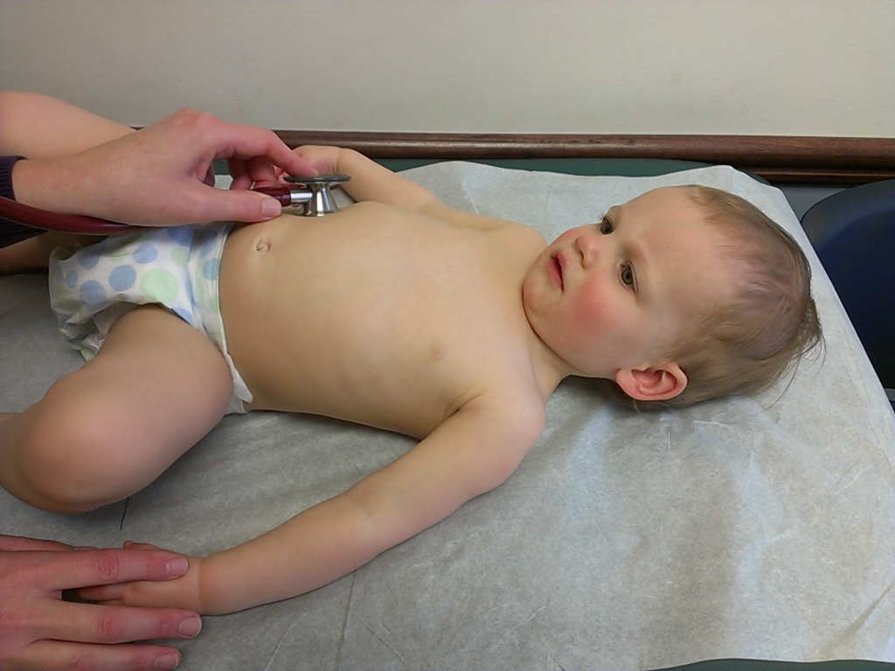
Achado: Lactente em consulta ambulatorial pediátrica — a queixa aguda no primeiro plano, o achado antropométrico no segundo.
Ragesoss, via Wikimedia Commons · CC BY-SA 3.0
Quiz fixação
Discriminação sinal × ruído na história.
Na história de Josias, o dado que mais deve preocupar o pediatra é:
Por que cada alternativa:
C) Certa. Peso 9,8 kg aos 2 anos e 6 meses (menos de 10 kg) é o dado que faz qualquer pediatra parar. A virada do caso: o motivo da consulta (o resfriado) é o ruído; o achado de verdade está escondido na antropometria, sem nenhuma relação com a tosse. Quem olha o gráfico encontra o que a queixa não conta.
A) FC 130 e FR 30 estão dentro do esperado/limítrofe para a idade com febre recente — não acendem alarme. Por que cair: números vitais "altos" chamam atenção em quem busca gravidade aguda, mas o caso descreve a criança afebril e estável; o sinal está na ficha antropométrica, não nos vitais.
B) Tosse e coriza há 3 dias são o motivo da consulta, mas banais — resfriado é resfriado, e a hipótese inicial é razoável. Por que cair: é o que a mãe trouxe e o que o exame respiratório mostra; o erro é parar no que motivou a vinda.
D) Abdome globoso, flácido, indolor, sem visceromegalia em pré-escolar é achado inocente, descrito no próprio exame como sem massa e sem hepatosplenomegalia — não é o alarme.
A conduta correta diante do caso é:
Por que cada alternativa:
B) Certa. As duas coisas convivem: o resfriado se trata com sintomáticos E o peso achado obriga a classificação nutricional. A virada: o achado antropométrico não cancela nem é cancelado pela queixa aguda — tratar o agudo e investigar o crônico acontecem na mesma consulta.
A) Ignorar a antropometria "porque a queixa é respiratória" repete o erro de só olhar a queixa — exatamente a armadilha do caso. Por que cair: é a conduta "focada no problema apresentado" que parece eficiente, mas joga fora o único dado que importava.
C) Encaminhar à UTI é desproporcional: nada no caso sugere gravidade aguda — a criança está afebril, acianótica e estável. Por que cair: reconhecer que "há algo grave" pode disparar resposta exagerada; o achado é crônico e ambulatorial, não emergencial.
D) Tomografia de crânio não tem base: não há nenhum sinal neurológico estrutural no exame. O achado é de peso, não de cabeça.
Peso · sensibilidade & técnica
mais sensívelagudobalança < 2a / 16 kgsem fralda
Peso: o parâmetro que sente primeiro
Por que o peso é o mais sensível (e fala do agudo)
Dos três parâmetros, o peso é o mais sensível a qualquer alteração de saúde. Toda infecção aguda — viral, resfriado, pneumonia, gripe — provoca variação de peso, com perda relativa num período curto. Por isso o peso é o dado mais sensível tanto para distúrbio nutricional agudo quanto crônico, mas fala especialmente do agudo: ele cai rápido e se recupera rápido. É o termômetro de curto prazo do estado da criança. Guarde o contraste que volta na página da estatura: peso = agudo; estatura = crônico.
Balança certa para cada criança
A técnica não é detalhe — é o que torna o número confiável. A criança deve ser pesada em balança pediátrica (de mesa) sempre que tiver menos de 2 anos ou até 16 kg; acima disso, balança de chão. O motivo é físico: peso muito pequeno em balança de chão dá variação pouco fidedigna, e a criança até 2 anos não se equilibra nem fica parada na plataforma.
Interativo — qual balança? arraste a idade e o peso e veja o corte (16 kg / 2 anos) decidir entre mesa e chão. Setas movem os sliders; resultado anunciado por leitor de tela.
Como pesar a criança pequena
O ideal é pesar a criança pequena sentada, preferencialmente sem fralda e sem nada que adicione peso além do próprio corpo, na balança pediátrica. Fralda cheia, roupa pesada, sapato — tudo isso é peso falso que contamina o gráfico.
Não confunda
Peso sensível
Qualquer alteração de saúde o mexe — por isso ele avisa cedo.
Peso específico
Justamente por ser sensível, ele não diz o que está errado — só que algo está. O diagnóstico vem do conjunto.
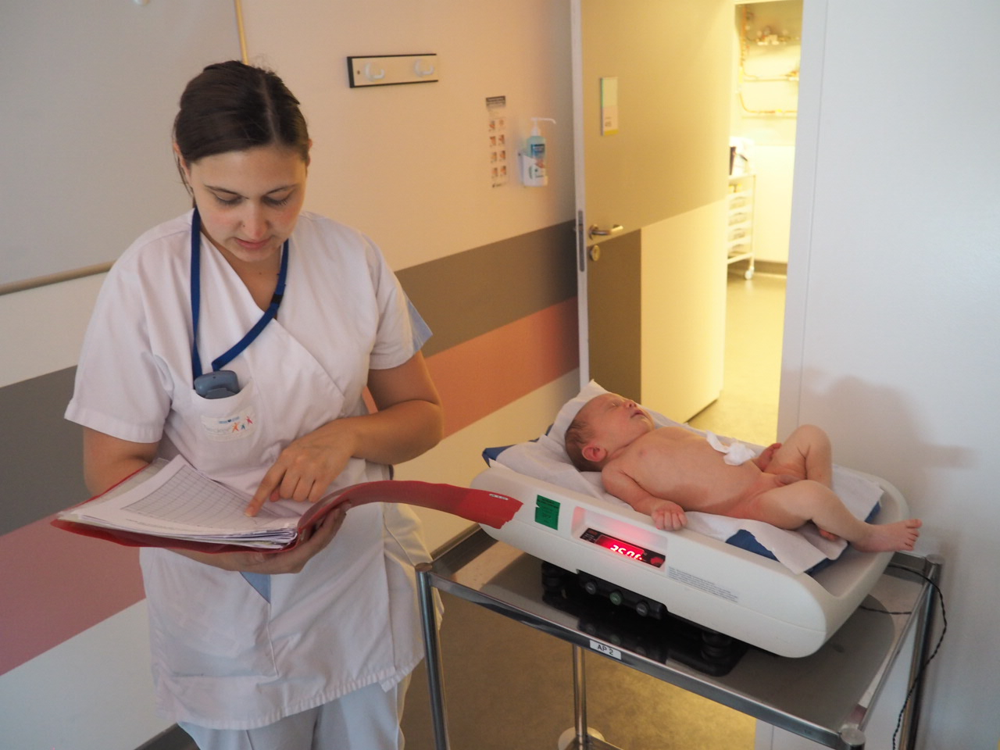
Achado: Balança pediátrica eletrônica de mesa — obrigatória para crianças com menos de 2 anos ou até 16 kg.
Oliver H, via Wikimedia Commons · CC BY-SA 3.0
Quiz fixação
Sensibilidade, temporalidade e técnica.
O peso é considerado o parâmetro mais sensível porque:
Por que cada alternativa:
B) Certa. O peso é o parâmetro mais sensível porque varia rápido com qualquer alteração aguda — cai e recupera rápido, sentindo o agudo antes de todos. A virada: toda infecção aguda (viral, resfriado, pneumonia, gripe) provoca variação de peso num período curto; é o termômetro de curto prazo do estado da criança.
A) "Demora a se alterar, refletindo só doença crônica" descreve a estatura, não o peso — é o par invertido. Por que cair: quem decorou que "peso e estatura são parecidos" troca os papéis; lembre o contraste: peso = agudo, estatura = crônico.
C) Medir o crescimento do cérebro é função do perímetro cefálico, não do peso — outro parâmetro, outra história do corpo. Por que cair: a pergunta é sobre "o mais sensível" e a tentação é colar a função de outro parâmetro.
D) "Só muda na desnutrição grave" subestima justamente a sensibilidade que define o peso — ele muda até num resfriado banal, não precisa de quadro grave. Limitar à desnutrição grave nega o que o torna o melhor sinal precoce.
Uma criança de 18 meses pesando 11 kg deve ser pesada em:
Por que cada alternativa:
B) Certa. Balança pediátrica de mesa: a criança tem menos de 2 anos (18 meses) e está abaixo de 16 kg (11 kg) — satisfaz os dois critérios. A virada: o corte é "menos de 2 anos OU até 16 kg" e basta um deles bater; aqui batem os dois.
A) "Balança de chão por já andar" erra o critério: o que decide não é andar, é a idade (< 2 anos) ou o peso (≤ 16 kg). Por que cair: aos 18 meses a criança já anda, e parece natural pesá-la em pé — mas a regra é etária/ponderal, e até os 2 anos ela não se equilibra parada na plataforma.
C) "Qualquer uma, é indiferente" ignora que a balança errada gera número não fidedigno — peso pequeno em balança de chão dá variação pouco confiável. A técnica é o que torna o número utilizável.
D) "Balança de chão pois passa de 10 kg" usa um limiar inexistente: o corte de peso é 16 kg, não 10. Por que cair: 10 kg é um número "redondo" que parece marco, mas o número da regra é 16 kg (ou 2 anos).
Ganho ponderal · 1º ano
rápido e desacelerado700-600-500-300dobra (4-5m) · triplica (12m)paradoxo 30 g/dia
A lógica que dispensa decorar: rápido e desacelerado
A perda fisiológica dos primeiros dias
Antes de ganhar, a criança perde — e está tudo certo. Nos primeiros 10 dias / primeira semana de vida, ela pode perder até 10% do peso de nascimento sem que isso seja problema: é perda fisiológica. O motivo é mecânico: o bebê nasce inchado do pós-parto e pode nascer com mecônio já digerido; nos primeiros dias se livra desse inchaço e perde peso. Passados esses dias, recupera o que perdeu e entra na fase de ganho ao longo do 1º ano.
700-600-500-300: o degrau do último trimestre
A frase-mestra é "rápido e desacelerado": no 1º ano a criança ganha muito, mas a cada mês ganha menos. O 1º ano é, disparado, o período de ganho ponderal mais cobrado em prova. O ganho por trimestre:
700
1º tri (g/mês)
600
2º tri
500
3º tri
300
4º tri · o degrau
A sequência seria "bonita" se terminasse em 400 (700-600-500-400). Mas não termina: o último trimestre dá um degrau e cai para 300. É exatamente esse degrau que a prova cobra — quem decora a sequência "lisa" erra. Lembre: o último trimestre não acompanha os anteriores.
Interativo — calculadora de ganho ponderal — entre o peso de nascimento, veja a curva em degraus, os marcos dobra/triplica e o paradoxo dos 30 g/dia. −/+ recalculam; marcos focáveis por teclado; recálculo anunciado por leitor de tela.
Dobra e triplica: as duas âncoras
Duas âncoras fecham o ganho ponderal do 1º ano:
A criança dobra (duplica) o peso de nascimento por volta de 4 a 5 meses. Ex.: nasceu 3 kg → ~6 kg no 5º mês.
A criança triplica o peso de nascimento ao completar 12 meses. Ex.: nasceu 3 kg → 9 kg ao fim do 1º ano (3 × 3 = 9).
O paradoxo dos 30 g/dia
No 1º trimestre, a criança ganha em torno de 25 a 30 g/dia — e é o que mais cai em g/dia. Aqui mora uma aparente contradição: 30 g/dia × 30 dias = 900 g no 1º mês, mas o ganho de referência é 700 g/mês. Não há erro. A estimativa em g/dia não desconta a perda fisiológica dos primeiros dias nem outras perdas. O g/dia é um dado mais bruto, útil para avaliar pequenos intervalos de tempo; o g/mês já vem "líquido". Os dois convivem.
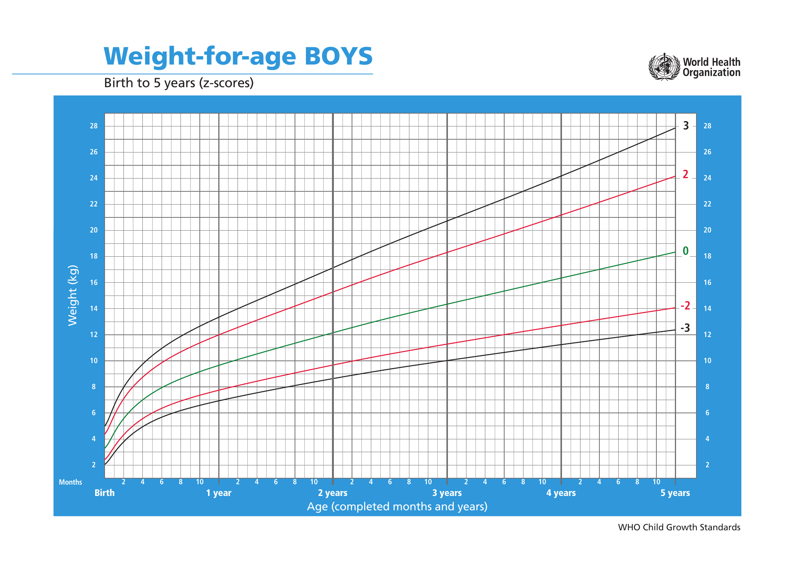
Achado: WHO Child Growth Standards — Peso × Idade, meninos, 0 a 5 anos (escore-z). A curva sobe rápido no 1º ano e desacelera em degraus decrescentes.
WHO Child Growth Standards, weight-for-age · CC BY-NC-SA 3.0 IGO (uso educacional)
Quiz fixação
Os números do ganho ponderal e os dois pontos onde a banca arma.
A sequência de ganho ponderal por trimestre no 1º ano (referência clássica) é:
Por que cada alternativa:
B) Certa. 700-600-500-300 g/mês é a sequência clássica, com o degrau no fim: o 4º trimestre cai para 300, não para 400. A virada: a sequência seria "bonita" se terminasse em 400, mas o último trimestre não acompanha os anteriores — é exatamente esse degrau que a prova cobra.
A) 700-600-500-400 é a armadilha da sequência "lisa", o erro mais comum. Por que cair: a mente completa o padrão decrescente "redondo" (−100 a cada trimestre) e fecha em 400; quem decora a lista lisa cai aqui — o degrau para 300 é justamente o que se ignora.
C) 700-500-400-350 é a tabela da SBP, correta só se a questão disser explicitamente "segundo a SBP" — não é a referência clássica pedida aqui. Por que cair: é uma sequência real e oficial, então parece segura; o detalhe é qual referência o enunciado cobra.
D) 600-500-400-300 erra logo o 1º trimestre: a sequência clássica começa em 700, não em 600. O resto desliza junto com o início errado.
Uma criança nasceu com 3,2 kg. Pela regra, ao completar 12 meses ela deve pesar aproximadamente:
Por que cada alternativa:
C) Certa. Aos 12 meses a criança triplica o peso de nascimento: 3,2 × 3 = 9,6 kg. A virada: o marco do 1º ano é a triplicação; a duplicação acontece antes, por volta dos 4-5 meses.
A) 6,4 kg é o dobro de 3,2 — a duplicação, que ocorre por volta dos 4-5 meses, não aos 12. Por que cair: dobrar é o múltiplo mais fácil de calcular de cabeça, e quem troca o marco (dobra × triplica) pousa nele; a pergunta pede o de 12 meses, onde já triplicou.
B) 8,0 kg não corresponde a nenhum múltiplo da regra (nem ×2 nem ×3 de 3,2) — é um valor solto entre a duplicação e a triplicação. Por que cair: parece "um meio-termo plausível" para quem estima sem aplicar o múltiplo exato.
D) 12,8 kg seria quadruplicar (×4) o peso de nascimento — exagera o múltiplo do 1º ano, que é a triplicação (×3), não ×4.
30 g/dia × 30 dias dá 900 g no 1º mês, mas o ganho de referência é 700 g/mês. Isso ocorre porque:
Por que cada alternativa:
B) Certa. O cálculo 30 g/dia × 30 dias = 900 g é estimativa bruta; ele não desconta a perda fisiológica (até 10% do peso na 1ª semana) e outras perdas. O g/mês de referência (700 g) já é líquido dessas perdas. A virada: é diferença de granularidade — bruto × líquido —, não contradição entre as tabelas.
A) "Há erro nas tabelas oficiais" nega o consenso sem motivo — os dois números são corretos, cada um medindo coisa diferente (diário bruto × mensal líquido). Por que cair: diante de dois números que "não fecham", a saída preguiçosa é declarar erro na fonte, em vez de procurar o que cada um mede.
C) "A criança ganha mais do que o esperado sempre" inverteria a lógica: o ganho líquido é menor que o bruto justamente porque há perdas a descontar, não porque ganha a mais. Lê o dado ao contrário.
D) "O g/mês está subestimado" trata o valor líquido (700 g/mês) como se estivesse errado para baixo — mas ele é a referência correta, já abatidas as perdas; quem está "inflado" é o bruto diário.
Estatura · crônico & técnica
crônicocomprimento × alturadeitado até 2 anos0,7 cm
Deitada
A mesma criança, medida deitada, é cerca de 0,7 cm mais alta.
vs
Em pé
Em pé, a gravidade "encolhe" — e o peso despenca num resfriado, mas a estatura nem se mexe.
Mesma criança, números diferentes. Por quê? É o que a página resolve.
Estatura: por que deitado a criança é mais alta
Estatura fala do crônico, não do agudo
A estatura é um bom parâmetro, mas não para alterações agudas — a criança demora a alterar a estatura. Justamente por ser lenta, ela é interessante para doenças crônicas: um processo crônico de má absorção de nutriente gera variação de estatura ao longo do tempo, servindo de pista para suspeitar de algo arrastado em curso. Eis o par perfeito com o peso: peso = agudo, estatura = crônico. Uma criança que perdeu peso recentemente teve algo agora; uma criança baixa para a idade carrega algo há tempo.
Comprimento × altura: deitado até 2 anos
A estatura mede-se de duas formas, com dois nomes:
Criança deitada → chama-se comprimento.
Criança em pé → chama-se altura.
A regra de quando usar cada um: até 2 anos, mede-se deitada (régua antropométrica horizontal — comprimento); depois dos 2 anos, em pé (régua vertical — altura). Medir a criança pequena deitada é um momento delicado da consulta: ela chora e se debate, é difícil — mas tem que ser assim até os 2 anos.
Interativo — comparador deitado × em pé — alterne a posição e veja a diferença de +0,7 cm aplicada/removida pela gravidade. Toggle acessível; valores anunciados por leitor de tela.
Os 0,7 cm que já caíram em prova
As medidas deitada e em pé têm equivalência, mas não são iguais: a deitada é maior. O motivo é a gravidade — em pé, ela empurra o corpo para baixo e "encolhe" a pessoa. A diferença é de cerca de 0,7 cm: deitada a criança tem ~0,7 cm a mais do que em pé. Essa equivalência importa para montar tabela de conversão e não superestimar nem subestimar ao trocar de método de medida. E não é teórico: a variação de 0,7 cm já caiu em questão de prova recente.
Não confunda
Comprimento
Deitado, até 2 anos — e é o maior (+0,7 cm).
Altura
Em pé, depois dos 2 anos — o menor. O nome muda com a posição; o número também muda em 0,7 cm.
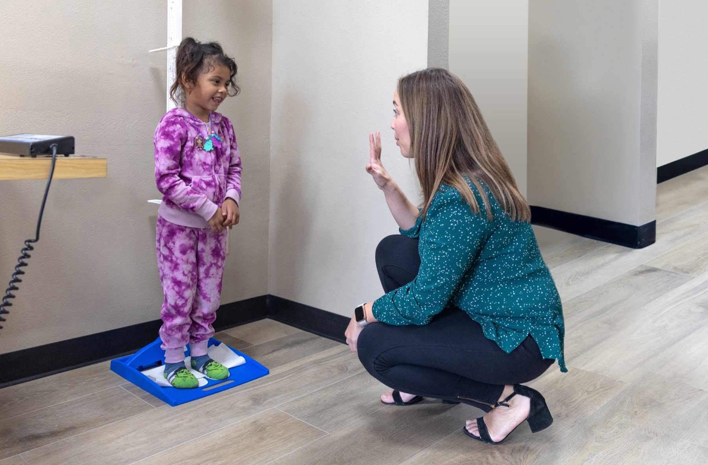
Achado: Aferição de estatura em pé (altura) em criança maior de 2 anos sobre plataforma de estadiômetro — depois dos 2 anos, mede-se em pé.
USDA Food and Nutrition Service (WIC), San Diego · Domínio público
Quiz fixação
Contraste temporal, técnica e a equivalência de 0,7 cm.
A estatura é o parâmetro mais indicado para suspeitar de:
Por que cada alternativa:
C) Certa. Um processo crônico de má absorção de nutriente gera variação de estatura ao longo do tempo. A virada: a estatura é lenta para mudar, e é exatamente essa lentidão que a torna boa pista de doença crônica — peso = agudo, estatura = crônico. Uma criança baixa para a idade carrega algo há tempo.
A) Resfriado iniciado há 2 dias é evento agudo, território do peso — a estatura não se mexe em 2 dias. Por que cair: qualquer alteração de saúde tenta a resposta "olhe o crescimento", mas o quadro recente é função do peso, não da estatura.
B) Desidratação aguda também é agudo: muda volume e peso em horas, não estatura. Por que cair: desidratação "encolhe" a criança na imaginação, mas a régua não registra isso; é o peso que cai.
D) Infecção respiratória aguda é, pelo próprio nome, aguda — território do peso, não da estatura, que demora a alterar.
Sobre a medida da estatura, é correto afirmar:
Por que cada alternativa:
C) Certa. Acerta os dois pontos: até 2 anos mede-se deitada (comprimento), e deitada a criança mede ~0,7 cm a mais que em pé. A virada: deitada a gravidade deixa de comprimir o corpo, então o comprimento é a medida maior.
A) "Até 2 anos mede-se em pé (altura)" inverte o corte: até 2 anos é deitada (comprimento); em pé (altura) só depois dos 2 anos. Por que cair: medir em pé é o gesto "normal" do adulto, e quem não fixou a regra etária projeta isso na criança pequena — que justamente não fica parada em pé.
B) "Deitado mede ~0,7 cm a MENOS" inverte o sinal: deitado é maior, não menor. Por que cair: sabe-se que há diferença de 0,7 cm, mas a direção é a pegadinha — sem a gravidade comprimindo, o corpo "estica", então deitado dá mais.
D) "Dão exatamente o mesmo valor" ignora a diferença de ~0,7 cm entre as duas posições, que é o ponto fino da página.
Ganho de estatura · ano a ano
50 cm ao nascer+25 cm (15+10)metade no 2º ano7-8 / 6-7 cm/ano
?
Se o peso desacelera em degraus, a altura faz o mesmo — e quanto exatamente a criança ganha por ano?
Quanto a criança cresce em altura, ano a ano
50 cm ao nascer, +25 no 1º ano
A criança nasce, em média, com cerca de 50 cm — valor médio, não regra. No 1º ano, ganha cerca de 50% da estatura de nascimento: 50% de 50 cm ≈ 25 cm. Ou seja, sai de ~50 e chega a ~75 cm ao fim do 1º ano. Esse ganho de 25 cm é o número-âncora da estatura.
15 + 10: a desaceleração dentro do 1º ano
A mesma lógica "rápido e desacelerado" reparte esses 25 cm de forma desigual dentro do 1º ano: 1º semestre 15 cm, 2º semestre 10 cm (15 + 10 = 25). Cresce mais rápido na primeira metade, como sempre.
15
1º semestre (cm)
10
2º semestre (cm)
25
total 1º ano
Metade no 2º ano
No 2º ano, a criança ganha em média metade do que ganhou no 1º: metade de 25 cm ≈ 12,5 cm. A desaceleração continua ano a ano.
Interativo — timeline de estatura — avance a idade e veja a estatura acumular (50 → 75 → ~87,5 → reta de 7-8/6-7 cm/ano), com a parcela de cada período destacada. Setas avançam a idade; valor anunciado por leitor de tela.
Velocidade pré-escolar × escolar
A partir daí o crescimento deixa de ser muito rápido e passa a ser constante e linear — e ganha um nome próprio: velocidade de crescimento (quanto a criança ganha por ano). Dois números para guardar:
Pré-escolar (≈2 a 5 anos): 7 a 8 cm/ano.
Escolar (após 5 anos, antes da puberdade): 6 a 7 cm/ano.
Memorize especialmente a do escolar, 6 a 7 cm/ano — ela é a chave para explicar um distúrbio do crescimento mais adiante. No pré-escolar e no escolar o crescimento já não dá saltos; vira uma reta.
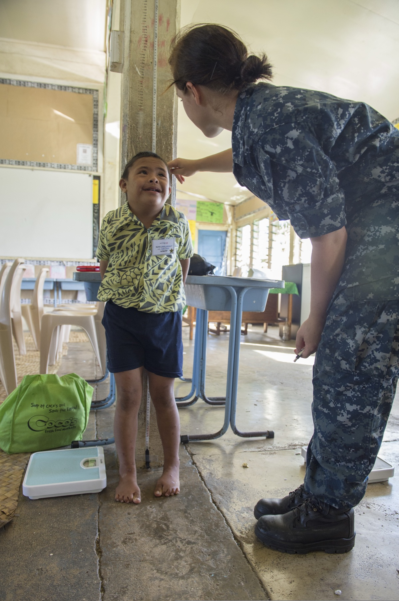
Achado: Medida de estatura em pé contra régua antropométrica vertical, com alinhamento do vértice da cabeça — a técnica que acompanha a velocidade de crescimento ano a ano.
MC3 Samantha J. Webb, U.S. Navy (Pacific Partnership 2013) · Domínio público
Quiz fixação
Os números da estatura, derivados pela mesma desaceleração.
Uma criança nasce com 50 cm. Pela regra, ao completar 1 ano ela deve medir aproximadamente:
Por que cada alternativa:
C) Certa. 50 + 25 = 75 cm. A virada: no 1º ano a criança ganha ~50% da estatura de nascimento — 50% de 50 cm = 25 cm —, então sai de ~50 e chega a ~75 cm; o ganho de 25 cm é o número-âncora da estatura.
A) 60 cm supõe ganho de só 10 cm — subestima o ganho real de ~25 cm. Por que cair: 10 cm "parece muito" para um bebê pequeno, e quem não fixou os 25 cm chuta um ganho modesto.
B) 65 cm corresponde a ganho de 15 cm — que é só a parcela do 1º semestre (15 + 10 = 25), não o ano inteiro. Por que cair: 15 cm é um número verdadeiro da página, mas é metade da história; parar no 1º semestre dá 65 em vez de 75.
D) 100 cm dobraria a estatura de nascimento — não é a regra do 1º ano, que soma ~25 cm (50%), não 100%. Exagera o ganho.
A velocidade de crescimento no escolar (antes da puberdade) é, classicamente:
Por que cada alternativa:
B) Certa. No escolar (antes da puberdade) a velocidade é classicamente 6 a 7 cm/ano. A virada: a desaceleração continua — depois do salto do 1º e 2º anos, o ritmo cai e estabiliza num regime linear mais lento, e esse é o número a memorizar para distúrbios de crescimento.
A) 7 a 8 cm/ano é a velocidade do pré-escolar (2 a 5 anos), um degrau acima do escolar. Por que cair: os dois valores são vizinhos e fáceis de trocar; quem não fixou qual faixa é qual pega o número da fase anterior.
C) 12,5 cm/ano é o ganho do 2º ano inteiro (metade dos 25 cm do 1º), não a velocidade do escolar. Por que cair: é um número real da página, mas de outra fase — confunde-se ganho anual de criança pequena com velocidade do escolar.
D) 25 cm/ano é o ganho do 1º ano — disparado o mais alto, próprio do lactente, não do escolar já desacelerado.
O ganho de 25 cm do 1º ano divide-se por semestre como:
Por que cada alternativa:
C) Certa. 15 cm no 1º semestre + 10 cm no 2º = 25 cm. A virada: a mesma lógica "rápido e desacelerado" reparte os 25 cm de forma desigual — cresce mais na primeira metade.
A) 12,5 + 12,5 distribui igual e ignora a desaceleração — não é metade-metade dentro do 1º ano. Por que cair: dividir 25 por 2 é o reflexo aritmético, mas o crescimento freia, então o 1º semestre tem que pesar mais.
B) 10 + 15 acerta os números mas inverte a ordem: o 1º semestre é o de 15 cm (cresce mais), o 2º é o de 10. Por que cair: quem lembra "15 e 10" sem fixar a direção arrisca a ordem errada; a regra é desacelerar, logo o maior vem primeiro.
D) 20 + 5 exagera o degrau entre os semestres: a queda é de 15 para 10, não de 20 para 5. Distorce a magnitude da desaceleração.
Perímetro cefálico · neurodesenvolvimento
mede o cérebroglabela → occipital2-1-0,5 cm/mês~12 cm/ano
Erro comum desmontado
"O perímetro cefálico é o número menos importante — dá para deixar em branco."
Muita caderneta vem com o PC em branco — e isso é um erro. O número que parece o menos importante é, na verdade, o que mede o cérebro.
Perímetro cefálico: o número que mede o cérebro
Por que esquecer o PC é um erro
O perímetro cefálico é frequentemente subestimado e deixado de lado — muitas cadernetas têm o PC não avaliado. Esse é um erro relevante, porque o PC é um dado de neurodesenvolvimento. A medida da cabeça reflete o crescimento da calota craniana, e o crescimento da calota reflete o crescimento do que está dentro dela: o cérebro. PC que cresce bem indica cérebro se desenvolvendo bem. Por isso ele não pode ser esquecido.
Como se mede: glabela ao occipital
O PC é a medida da cabeça, obtida passando uma fita da glabela até o occipital, medindo quanto a calota craniana aumenta ao longo dos primeiros dois anos de vida.
A regra do "diminuir pela metade": 2-1-0,5
O ganho de PC no 1º ano segue a mesma lógica do peso e da estatura: rápido e desacelerado. A criança nasce com PC em torno de ~35 cm (varia) e ganha, ao longo de todo o 1º ano, cerca de 12 cm. A regra de memória é "diminuir pela metade":
2
1º tri (cm/mês)
1
2º tri
0,5
3º tri
0,5
4º tri
Cada degrau é metade do anterior: 2 → 1 → 0,5. Simples e fiel à desaceleração.
Interativo — contador de PC — escolha o mês e veja o PC acumular aplicando 2-1-0,5, com o 2º semestre destacado como DOIS trimestres a 0,5. Teclado acessível; total anunciado por leitor de tela.
A pegadinha do segundo semestre
Cuidado com a contagem: o segundo semestre contém dois trimestres (3º e 4º), e ambos ficam em 0,5 cm/mês. Quem confunde "trimestre" com "semestre" erra a conta. Não é "0,5 só no 4º trimestre" — é 0,5 nos dois últimos trimestres.
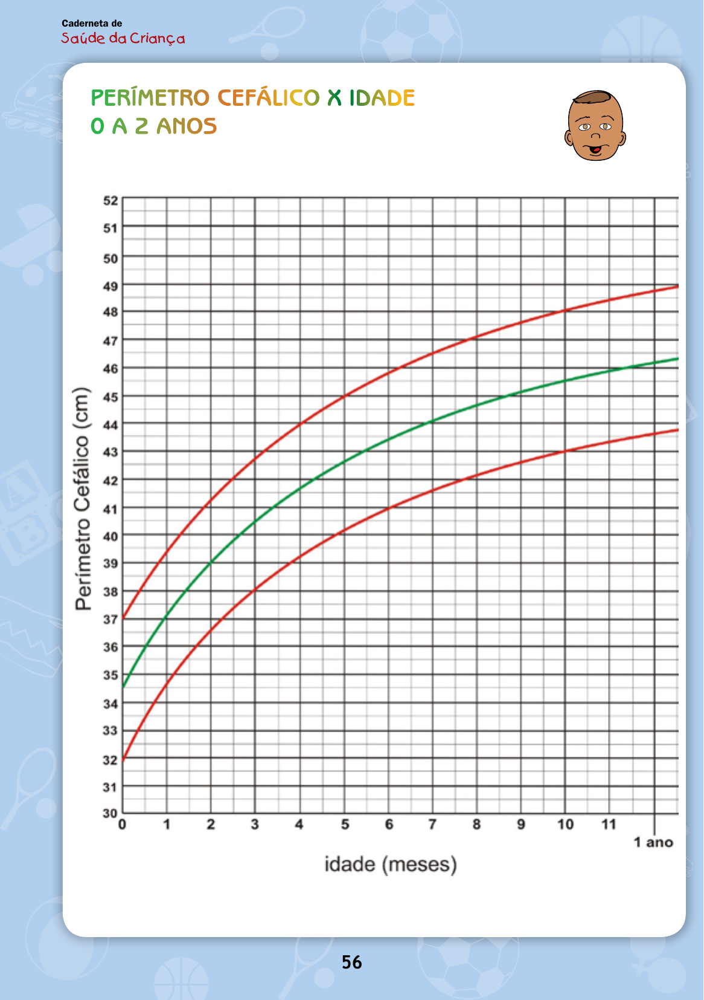
Achado: Caderneta de Saúde da Criança (MS) — gráfico Perímetro Cefálico × Idade (0 a 2 anos), curvas de escore-z; o PC é a terceira medida obrigatória do menor de 2 anos.
Caderneta de Saúde da Criança, 12ª ed. Ministério da Saúde, 2023 · Material oficial do MS (público)
Quiz fixação
Função, regra 2-1-0,5, total e a pegadinha do semestre.
O perímetro cefálico é importante porque reflete:
Por que cada alternativa:
B) Certa. O PC reflete o crescimento do cérebro/neurodesenvolvimento. A virada: a medida da cabeça reflete o crescimento da calota craniana, e a calota cresce porque o que está dentro dela — o cérebro — cresce; por isso o PC, tão subestimado e deixado de lado, não pode ser esquecido.
A) Estado nutricional agudo é o que o peso reflete, não o PC. Por que cair: a pergunta lista funções dos três parâmetros, e a tentação é colar no PC a função mais famosa (a do peso); cada um conta uma história diferente do mesmo corpo.
C) Massa muscular não é o que a calota craniana mede — a fita da glabela ao occipital mede o crânio, espelho do cérebro, não músculo.
D) Reserva de gordura aproxima-se da leitura do IMC, não do PC. Por que cair: "perímetro" sugere circunferência corporal/gordura para quem não fixou que aqui é o perímetro da cabeça.
A regra do ganho de PC no 1º ano ("diminuir pela metade") é:
Por que cada alternativa:
B) Certa. 2 → 1 → 0,5 cm/mês: 2 no 1º trimestre, 1 no 2º, 0,5 no 2º semestre, totalizando ~12 cm no 1º ano. A virada: cada degrau é metade do anterior — é a regra "diminuir pela metade", fiel à desaceleração que governa os três parâmetros.
A) 1 → 0,5 → 0,25 mantém a lógica de metades, mas começa baixo demais: o 1º trimestre é 2 cm/mês, não 1. Por que cair: o padrão "cair pela metade" está certo, e quem erra só o ponto de partida desce a escada inteira deslocada.
C) 2 → 2 → 1 não desacelera no 2º trimestre (repete o 2), violando o "metade a cada degrau". A regra exige que cada trimestre caia, e este trava no começo.
D) 3 → 2 → 1 não segue o "metade a cada degrau" (de 3 para 2 não é metade) e começa em 3, acima do valor inicial de 2. Inventa um decrescimento linear, não pela metade.
No 2º semestre do 1º ano, o ganho de PC é:
Por que cada alternativa:
B) Certa. Os dois trimestres do 2º semestre (3º e 4º) ficam em 0,5 cm/mês. A virada: na sequência 2-1-0,5, o último valor cobre o semestre inteiro — são dois trimestres a 0,5, não um.
A) "0,5 apenas no 4º trimestre" é exatamente a pegadinha da página: o 2º semestre tem dois trimestres (3º e 4º), ambos a 0,5. Por que cair: a lista 2-1-0,5 tem três números e dá a impressão de cobrir três trimestres, fazendo esquecer que o 0,5 se estende pelo 4º também.
C) 1 cm/mês é o valor do 2º trimestre, não do 2º semestre — confunde trimestre com semestre. Por que cair: "segundo" aparece nos dois (2º trimestre e 2º semestre) e a troca de unidade engana.
D) "Não há ganho no 2º semestre" é falso — o PC continua crescendo a 0,5 cm/mês; desacelera, não para.
Síntese · Herói A
rápido e desaceleradotri-parâmetrototais do 1º anoonde a prova arma
Ao final desta página você vai ler de cabeça:
Peso: 700-600-500-300 g/mês e dobra/triplica
Estatura: +25 cm (15+10), metade no 2º ano, velocidade 7-8 / 6-7
PC: 2-1-0,5 cm/mês, ~12 cm/ano
A lógica única que gera os três: rápido e desacelerado
O mapa da desaceleração: três parâmetros, uma só lógica
A lógica única em uma imagem
Os três parâmetros parecem três decorebas separadas, mas são uma só lógica vestida de três jeitos: rápido e desacelerado. Cada um começa rápido e perde força em degraus. O peso cai 700 → 600 → 500 → 300. A estatura reparte 25 cm em 15 + 10 e depois cai pela metade ano a ano. O PC desce 2 → 1 → 0,5. Se você ancora a frase-mestra, não decora três tabelas — você deriva as três.
Lendo os três eixos juntos
Lado a lado, no 1º ano:
Parâmetro
1º tri
2º tri
3º tri
4º tri
Total 1º ano
Âncoras
Peso
700 g/mês
600 g/mês
500 g/mês
300 g/mês
triplica (×3)
dobra ~4-5m
Estatura
15 cm (1º sem.)
—
10 cm (2º sem.)
—
+25 cm
metade no 2º ano (~12,5)
PC
2 cm/mês
1 cm/mês
0,5 cm/mês
0,5 cm/mês
~12 cm
2 anos de avaliação
E adiante: a estatura ganha velocidade (pré-escolar 7-8, escolar 6-7 cm/ano). Os três contam a mesma história de freio progressivo.
Síntese — os três parâmetros são a mesma curva de desaceleração em três escalas. Hotspots nos três eixos e nos pontos de pegadinha; o toggle sobrepõe a curva única.
Onde a prova arma
Três armadilhas favoritas, todas no cruzamento:
O degrau do peso (300, não 400) — quem decora "liso" erra.
O paradoxo do g/dia (30 × 30 = 900 ≠ 700) — esquecer a perda fisiológica.
O 2º semestre do PC (dois trimestres a 0,5, não um).
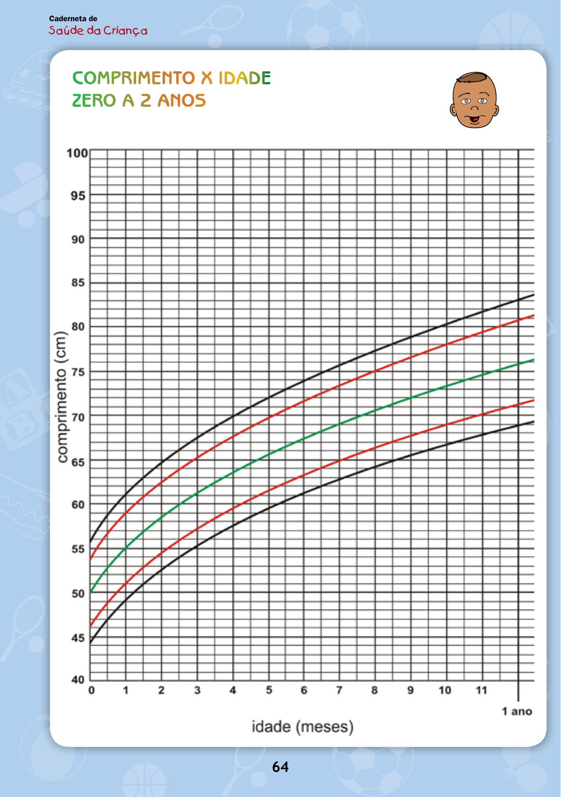
Achado: Caderneta da Criança — gráfico Comprimento × Idade (escore-z, OMS 2006): a mesma desaceleração que rege peso e PC, vista na estatura.
Caderneta de Saúde da Criança, 12ª ed. Ministério da Saúde, 2023 · Material oficial do MS (público)
Quiz fixação
A lógica única e os totais do 1º ano.
A "lógica única" que governa peso, estatura e PC no 1º ano é:
Por que cada alternativa:
B) Certa. Rápido e desacelerado: rápido no começo, freando em degraus. A virada: é a frase-mestra que veste três jeitos — o peso cai 700→600→500→300, a estatura reparte 25 cm em 15+10, o PC desce 2→1→0,5. Ancorada a frase, você deriva as três sequências em vez de decorar três tabelas.
A) "Linear e constante" descreve o regime do pré-escolar/escolar (velocidade estável em cm/ano), não o 1º ano, que é de degraus decrescentes. Por que cair: "constante" soa como o crescimento "normal e saudável"; o detalhe é que no 1º ano ele é tudo menos constante.
C) "Lento que acelera" inverte a lógica: o 1º ano começa rápido e desacelera, não o contrário. Lê a curva ao revés.
D) "Saltos aleatórios" nega a regularidade dos degraus — a desaceleração é previsível e calculável, não aleatória.
Qual conjunto de "totais do 1º ano" está correto?
Por que cada alternativa:
B) Certa. Peso triplica · estatura +25 cm · PC ~12 cm — os três totais do 1º ano. A virada: cada total é a soma dos degraus desacelerados do próprio parâmetro, todos vindos da mesma regra-mestra.
A) Erra só o peso: aos 12 meses ele triplica (×3), não dobra — a duplicação é marco de ~4-5 meses. Por que cair: estatura e PC estão certos, e dobrar é o múltiplo mais intuitivo; trocar a triplicação pela duplicação é o deslize clássico.
C) Dobra a estatura (+50 em vez de +25) e corta o PC pela metade (~6 em vez de ~12) — exagera uma e subestima a outra. Por que cair: +50 cm "parece muito crescimento" e seduz quem confunde o ganho com a estatura final aproximada.
D) Usa a duplicação do peso e o ganho de estatura do 2º ano (+12,5), misturando marcos de fases diferentes. Pega números reais, mas da idade errada.
Sistema de leitura · OMS
escore-Zcor = desvio-padrãopercentilsoma 100
7
Cada cor no gráfico da caderneta não é decoração — é um desvio-padrão exato. Sete curvas, de Z+3 a Z-3, e a OMS já fez o trabalho por você.
Escore-Z e percentil: o sistema que a OMS te dá pronto
O gráfico da caderneta: cores de cima para baixo
Existem várias formas de análise, mas as que mais se fazem e mais se cobram são as recomendações do Ministério da Saúde e da Sociedade Brasileira de Pediatria — que são congruentes, falam a mesma coisa, e mandam analisar pelos gráficos da OMS (azuis para meninos, rosa para meninas), presentes na caderneta. De cima para baixo, o gráfico tem: uma curva preta superior, duas vermelhas, duas amarelas, uma verde central, e embaixo o espelho — amarela, vermelha e preta inferior.
Escore-Z: distância da média em desvios
Essas curvas medem o escore-Z: o quanto a criança, naquele valor, está perto ou longe da média para a idade dela. Z0 é a média. Acima da média a criança se distancia para cima; abaixo, para baixo. Em desvios-padrão: Z+3 = 3 acima · Z+2 = 2 acima · Z+1 = 1 acima · Z0 = na média; para baixo espelha (Z-1, Z-2, Z-3). O escore-Z é o parâmetro mais cobrado em prova — e é fácil de construir.
Cada cor é um Z
Cada escore-Z corresponde a uma curva (acima da média): Z+3 = preta de cima, Z+2 = vermelha de cima, Z+1 = amarela de cima. Para baixo, a mesma lógica espelhada (amarela de baixo = Z-1, vermelha de baixo = Z-2, preta de baixo = Z-3). A curva verde central é a média (Z0).
Interativo — gráfico OMS interativo — clique numa curva e leia o Z, a cor, o percentil equivalente e a soma-100 com a curva espelhada; o slider posiciona um ponto-criança. Tab entre curvas, Enter revela; slider por teclado com aria-valuetext.
Percentil: a soma que sempre dá 100
Algumas questões não usam escore-Z e cobram o percentil. Ele não fala rigorosamente da mesma coisa: o percentil avalia um valor mediano (P50) em vez de médio (diferença estatística), mas há correlação fidedigna entre os dois. As equivalências (acima): Z+3 ≈ P99,9 · Z+2 ≈ P97 · Z+1 ≈ P85 · Z0 = P50.
E o mnemônico que resolve tudo: percentil fala de porcentagem, e a curva de cima completa 100% com a equivalente de baixo.
Amarela de cima P85 ↔ amarela de baixo P15 (85 + 15 = 100)
Vermelha de cima P97 ↔ vermelha de baixo P3 (97 + 3 = 100)
Preta de cima P99,9 ↔ preta de baixo ~P0,1 (99,9 + 0,1 = 100)
Sabendo essas equivalências, nenhuma questão confunde a análise — peça Z ou percentil, a leitura é a mesma.
Não confunda
Escore-Z
Fala de média — distância em desvios-padrão.
Percentil
Fala de mediana. Correlacionam, mas não são a mesma grandeza estatística.
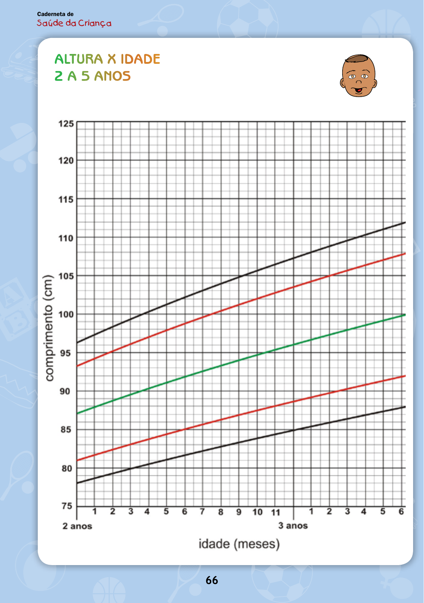
Achado: Caderneta da Criança — Altura × Idade (2 a 5 anos), curvas de escore-z: preta (±3), vermelha (±2), verde (0). Cada cor é um desvio-padrão.
Caderneta de Saúde da Criança, 12ª ed. Ministério da Saúde, 2023 · Material oficial do MS (público)
Quiz fixação
A malha cor ↔ Z ↔ percentil.
A curva verde central do gráfico da OMS corresponde a:
Por que cada alternativa:
B) Certa. A verde central = Z0 = P50: a média/mediana, o eixo da normalidade. A virada: o gráfico é simétrico em torno dela — tudo acima se distancia para cima, tudo abaixo espelha para baixo.
A) Z+1 / P85 é a amarela de cima, um degrau acima do centro — não a verde. Por que cair: quem conta as curvas de baixo para cima, ou confunde "primeira curva colorida" com o centro, sobe um nível.
C) Z-2 / P3 é a vermelha de baixo, território de alerta inferior — longe do centro verde. Por que cair: vermelho e verde são as cores "fortes" do gráfico e podem ser trocadas por quem só lembra "tem cor no meio".
D) Z+3 / P99,9 é a preta de cima, o extremo superior — o oposto do eixo central.
A curva amarela de cima é Z+1 ≈ P85. Sua espelhada (amarela de baixo) corresponde ao percentil:
Por que cada alternativa:
C) Certa. Amarela de baixo = P15. A virada: percentis espelhados somam 100 — a amarela de cima é P85, logo a de baixo é 100 − 85 = 15. A simetria do gráfico faz cada par espelhado fechar em 100.
A) P50 é o centro (verde, Z0), não a amarela de baixo — essa é Z−1, abaixo da média. Por que cair: quem não aplica a soma 100 chuta o valor "central seguro".
B) P3 é a vermelha de baixo (espelho da P97, Z−2), uma curva mais abaixo que a amarela. Por que cair: as duas curvas inferiores ficam perto e quem pula uma linha pega o percentil da vizinha.
D) P85 repetiria o percentil da própria curva de cima — mas a espelhada tem que ficar abaixo da média, não pode coincidir com a de cima. Ignora o espelhamento.
Sobre escore-Z e percentil, é correto:
Por que cada alternativa:
C) Certa. O escore-Z fala de média e o percentil de mediana — grandezas estatísticas diferentes — mas correlacionam de forma fidedigna. A virada: por isso o gráfico consegue rotular cada curva com um Z e um percentil ao mesmo tempo, sem que sejam a mesma coisa.
A) "São a mesma grandeza" ignora a distinção estatística entre média (Z) e mediana (percentil). Por que cair: como cada curva carrega um Z e um percentil juntos, é tentador concluir que são sinônimos — eles andam juntos, mas não são idênticos.
B) "Z fala de mediana e percentil de média" inverte os conceitos: é o Z que se ancora na média e o percentil na mediana. Por que cair: sabendo que há uma associação cruzada, quem não fixou qual é qual troca os dois.
D) "Não há relação entre eles" nega a correlação confiável que justamente permite usar os dois rótulos na mesma curva.
Classificação · P/I e E/I
3 índicespeso/idade 0-10abaixo × muito baixoprefixo "muito"
?
Por que existe "muito baixo peso" mas não existe "muito peso para a idade"?
Peso e estatura para a idade: e o prefixo "muito"
Os três índices (e o quarto que você ignora)
Avaliado o crescimento, falta classificar: dizer o quanto a criança está nutricionalmente certa ou errada, para cima ou para baixo. São três índices principais: peso para a idade, estatura para a idade e IMC para a idade. Existe um quarto, peso para estatura, mas ele não é tão relevante — foque nos três.
Peso/idade: 0 a 10 anos
O peso para a idade é análise importante dos 0 aos 10 anos. Os cortes:
Acima de Z+2 = peso elevado para a idade (não importa se passa do Z+3 ou não — não existe "muito peso para a idade"; só "peso elevado").
Abaixo de Z-2 mas não abaixo de Z-3 (faixa vermelha) = baixo peso para a idade.
Abaixo de Z-3 (faixa preta) = muito baixo peso para a idade.
Estatura/idade
A estatura para a idade segue a mesma estrutura abaixo da média:
Abaixo de Z-2, não abaixo de Z-3 (vermelha) = baixa estatura para a idade.
Abaixo de Z-3 (preta) = muito baixa estatura para a idade.
Interativo — classificador peso/idade + estatura/idade — arraste o ponto pela curva e veja a nomenclatura correta (peso elevado / eutrofia / baixo / muito baixo). Teclado acessível; classificação anunciada por leitor de tela.
O paralelo da nomenclatura "muito"
Aqui está o padrão que responde à pergunta de abertura: abaixo do baixo peso vem muito baixo peso; abaixo da baixa estatura vem muito baixa estatura. O prefixo de agravamento é "muito". Mas para cima, no peso/idade, não há subdivisão: passou do Z+2, é "peso elevado", ponto. Por isso não existe "muito peso para a idade" — a graduação fina para cima fica por conta do IMC, na próxima página.
Não confunda
Baixo peso
Z-2 a Z-3 (faixa vermelha) — um grau de alerta.
Muito baixo peso
Abaixo de Z-3 (faixa preta) — a faixa preta é sempre o extremo.
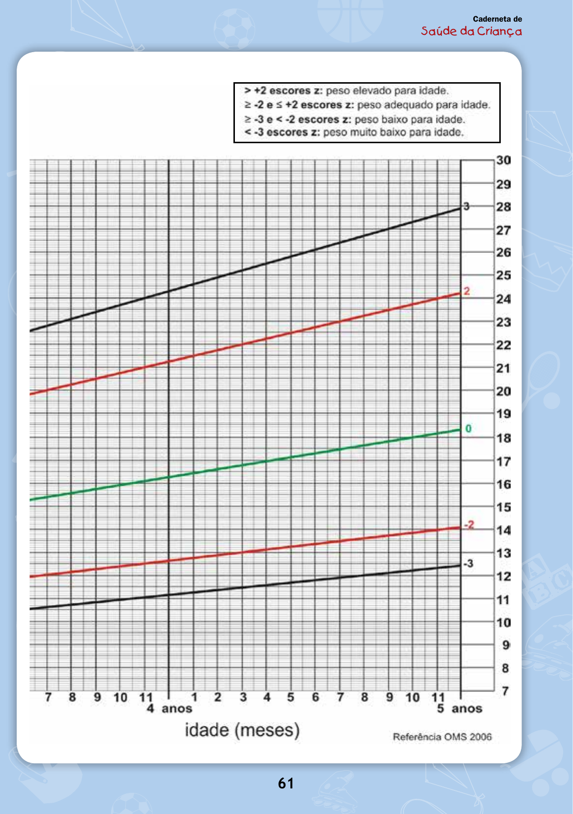
Achado: Caderneta da Criança — Peso × Idade (5 a 10 anos): faixa vermelha = baixo peso; faixa preta = muito baixo peso para a idade.
Caderneta de Saúde da Criança, 12ª ed. Ministério da Saúde, 2023 · Material oficial do MS (público)
Quiz fixação
Cortes de P/I e E/I e a lógica do "muito".
Uma criança de 7 anos com peso/idade abaixo do Z-3 é classificada como:
Por que cada alternativa:
B) Certa. Abaixo de Z-3 (faixa preta) = muito baixo peso para a idade. A virada: o prefixo "muito" só aparece no extremo, abaixo de Z-3; é a faixa preta que separa o "baixo" do "muito baixo".
A) "Baixo peso" é a faixa entre Z-2 e Z-3 (vermelha), um grau acima — não chega ao "muito". Por que cair: os dois rótulos só diferem pelo prefixo, e quem não fixa que abaixo de Z-3 vira "muito" fica na faixa de cima.
C) "Peso elevado para a idade" é o oposto: acima de Z+2, não abaixo de Z-3. Inverte o lado da curva.
D) "Eutrófica" estaria dentro da faixa normal (acima de Z-2) — incompatível com um valor abaixo de Z-3, que é o extremo inferior.
Sobre o peso para a idade acima da média, é correto:
Por que cada alternativa:
B) Certa. Acima de Z+2 = "peso elevado para a idade", e não há subdivisão acima nesse índice. A virada: passou de Z+3 ou não, dá no mesmo nome — não existe "muito peso para a idade"; só "peso elevado".
A) "Acima de Z+3 = muito peso para a idade" inventa um termo que não existe nesse índice. Por que cair: como abaixo da média existe o "muito baixo" (Z-3), é natural supor um "muito" simétrico no topo — mas para cima o peso/idade não gradua.
C) "Acima de Z+2 = sobrepeso" usa nomenclatura de IMC/idade, não de peso/idade — são índices diferentes. Por que cair: sobrepeso é o termo mais familiar para "peso a mais", e quem mistura os índices o aplica aqui.
D) "Acima de Z+1 = peso elevado" erra o corte: o limiar do peso elevado é Z+2, não Z+1 (Z+1 ainda está na faixa de normalidade superior).
Mesmo IMC, mesmo escore-Z: chama-se risco de sobrepeso.
vs
8 anos
Mesmíssimo Z: agora chama-se sobrepeso. A idade muda o nome.
O mesmo intervalo de Z, dois nomes — porque a faixa etária mudou. É o coração da página.
IMC para a idade: a tabela que muda aos 5 anos
Por que o IMC bifurca por idade
O IMC para a idade tem uma dificuldade a mais: acima da média, ele divide a criança em duas faixas etárias — 0 a 5 anos e 5 a 19 anos — e dá nomes diferentes ao mesmo intervalo de Z. Abaixo da média, não há divisão (isso facilita, e fica para o fim da página).
Acima da média: um estágio de diferença
O padrão-mestre: a criança de 5 a 19 anos está sempre um estágio acima da de 0 a 5 anos no mesmo intervalo de curvas. Veja lado a lado:
Intervalo de Z (faixa)
0 a 5 anos
5 a 19 anos
Z+1 a Z+2 (amarela)
risco de sobrepeso
sobrepeso
Z+2 a Z+3 (vermelha)
sobrepeso
obesidade
Acima de Z+3 (preta)
obesidade
obesidade grave
A lógica de gravidade crescente: antes da obesidade vem o sobrepeso; antes do sobrepeso, o risco de sobrepeso; antes da obesidade grave, a obesidade. A faixa de 5-19 anos "sobe um degrau" em cada intervalo.
Eutrofia: a faixa verde
A eutrofia é a faixa verde: criança acima do Z-2 e até o Z+1 (não passa de Z+1 para cima nem cai abaixo de Z-2). E vale para as duas faixas etárias — a eutrofia não se divide por idade.
Interativo — tabela dinâmica de IMC/idade — escolha a faixa etária (0-5 ou 5-19) e arraste o escore-Z; veja a classificação e o "degrau" de diferença no mesmo Z. Teclado acessível; classificação anunciada por leitor de tela.
Abaixo da média: magreza sem divisão de idade
Abaixo da média, o IMC não divide por idade — facilita. Dois estados, valendo para qualquer idade:
Abaixo de Z-2, não abaixo de Z-3 (vermelha) = magreza.
Abaixo de Z-3 (preta) = magreza acentuada.
Repare no paralelo de nomenclatura: abaixo da magreza não vem "muita magreza", vem magreza acentuada (uma magreza muito intensa). É o mesmo espírito do "muito" do peso/idade, com a palavra "acentuada".
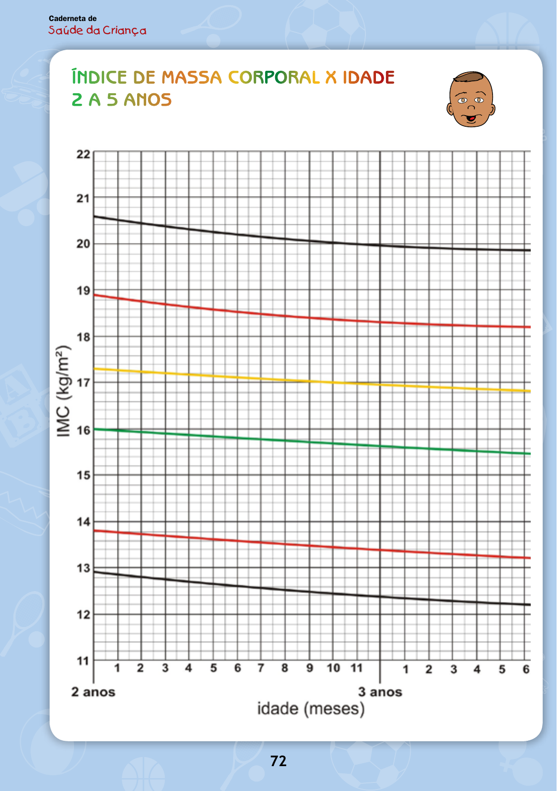
Achado: Caderneta da Criança — IMC × Idade com as seis faixas: obesidade, sobrepeso, risco de sobrepeso, IMC adequado (verde), magreza e magreza acentuada. Curva amarela = +1 escore-z.
Caderneta de Saúde da Criança, 12ª ed. Ministério da Saúde, 2023 · Material oficial do MS (público)
Quiz fixação
A bifurcação por idade, a eutrofia comum e a magreza.
Uma criança de 8 anos com IMC/idade entre Z+1 e Z+2 (faixa amarela) é classificada como:
Por que cada alternativa:
B) Certa. Aos 8 anos (faixa 5-19), a amarela (Z+1 a Z+2) = sobrepeso. A virada: a faixa 5-19 anos está sempre um estágio acima da de 0-5 no mesmo intervalo de curvas — onde a criança pequena tem "risco de sobrepeso", a maior já tem "sobrepeso".
A) "Risco de sobrepeso" é a classificação dessa mesma faixa amarela, mas em 0-5 anos — a pegadinha da idade. Por que cair: a faixa de Z é a mesma; quem não checa a idade aplica o nome da coluna errada (a criança tem 8 anos, não < 5).
C) "Obesidade" em 5-19 anos seria a faixa vermelha (Z+2 a Z+3), um intervalo acima da amarela. Por que cair: ao lembrar que "5-19 sobe um degrau", é fácil subir um degrau a mais e pular para obesidade.
D) "Eutrofia" é a faixa verde, abaixo de Z+1 — a amarela já está acima desse limite, fora da eutrofia.
A eutrofia no IMC/idade corresponde a:
Por que cada alternativa:
A) Certa. Eutrofia = Z-2 a Z+1, faixa verde, válida para ambas as faixas etárias. A virada: a bifurcação por idade só existe acima da média (Z+1 a Z+3); a eutrofia não se divide por idade — é célula única para qualquer criança.
B) "Z0 a Z+1, só para 0-5 anos" estreita errado o limite inferior (a eutrofia começa em Z-2, não em Z0) e inventa uma divisão etária que a eutrofia não tem. Por que cair: como o IMC bifurca por idade acima da média, supõe-se que toda faixa se divida — mas a verde é comum.
C) "Z-3 a Z-2, faixa vermelha" é magreza, não eutrofia — faixa de alerta inferior, abaixo do limite verde. Troca a faixa central pela faixa baixa.
D) "Z+1 a Z+2, faixa amarela" é risco de sobrepeso / sobrepeso — já acima da eutrofia, do lado de cima da curva.
Abaixo do Z-3 no IMC/idade, a classificação é:
Por que cada alternativa:
B) Certa. Abaixo de Z-3 no IMC/idade = magreza acentuada, para qualquer idade. A virada: abaixo da média o IMC não bifurca por idade — a faixa preta inferior é célula única, o extremo da magreza.
A) "Muita magreza" usa um termo que não existe na classificação — o nome oficial do extremo é "magreza acentuada". Por que cair: por analogia com "muito baixo peso" do peso/idade, inventa-se um "muito/muita" para o IMC, mas aqui o termo é outro.
C) "Magreza grave para 0-5 e acentuada para 5-19" inventa uma divisão de idade que não existe abaixo da média — só o topo do IMC bifurca por faixa etária. Por que cair: a bifurcação acima da média contamina a leitura de baixo para quem generaliza a regra.
D) "Baixo peso" é nomenclatura do peso/idade, não do IMC/idade — confunde os dois índices.
Lançado o IMC 14,5 aos 30 meses, ele cai acima do Z-2 e abaixo do Z+1 → eutrofia. (Acima de Z+1 seria risco de sobrepeso/sobrepeso; abaixo de Z-2 seria magreza.) A matriz dos três índices fica assim:
Índice de Josias
Valor
Faixa
Classificação
Peso/idade
9,8 kg
Z-2 a Z-3 (vermelha)
baixo peso para a idade
Estatura/idade
82 cm
Z-2 a Z-3 (vermelha)
baixa estatura para a idade
IMC/idade
14,5
Z-2 a Z+1 (verde)
eutrofia
Matriz — os três índices de Josias plotados nas curvas OMS; o toggle sobrepõe a explicação população × proporção própria.
Leitura do caso — referência rápida
Peso/idade — 9,8 kg: faixa vermelha (Z-2 a Z-3) → baixo peso para a idade.
Estatura/idade — 82 cm: faixa vermelha (Z-2 a Z-3) → baixa estatura para a idade.
Diagnóstico nutricional final de Josias: baixo peso para a idade, baixa estatura para a idade, paciente eutrófico. Parece contradição — como ter baixo peso e baixa estatura e ser eutrófico ao mesmo tempo? Não é. Peso/idade e estatura/idade comparam Josias com outras crianças da idade dele: ele é menor que os pares (baixo nos dois). Mas o IMC compara o peso dele com a própria estatura: para o tamanho que ele tem, o peso é proporcional. Josias é uma criança pequena, mas proporcional — não é desnutrido agudo (não está magro), é uma criança que cresceu pouco em peso e em estatura de forma harmônica. Esse é o "aha" da matriz: os três índices contam histórias diferentes, e só lendo os três juntos se fecha o diagnóstico.
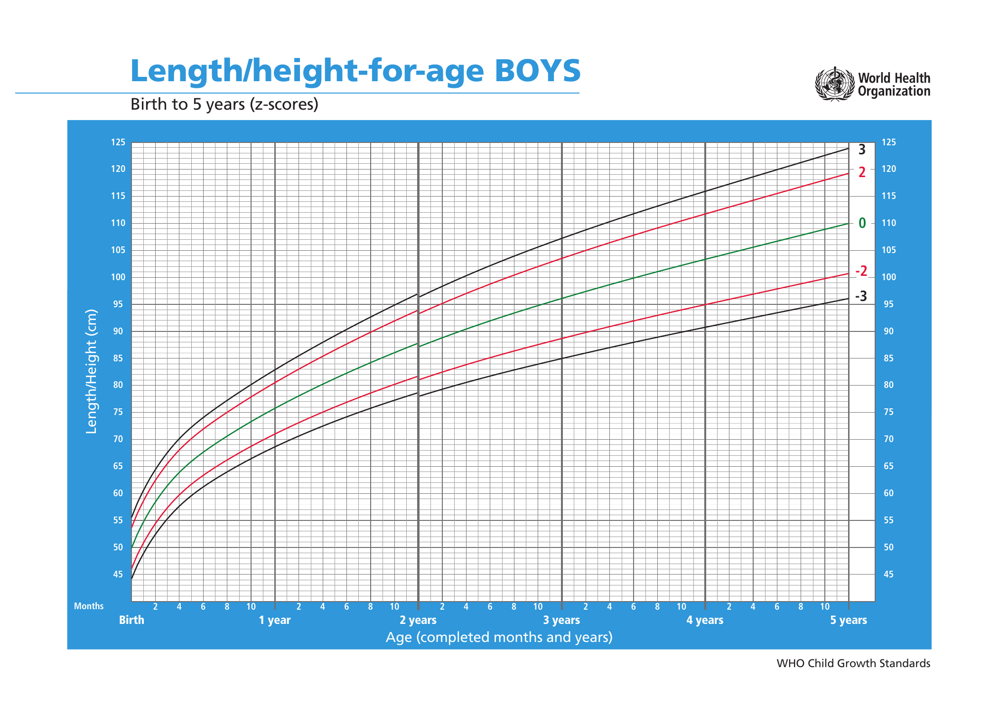
Achado: WHO Child Growth Standards — Comprimento/Estatura × Idade, meninos, 0 a 5 anos (escore-z): um dos três gráficos usados para fechar o diagnóstico de Josias.
WHO Child Growth Standards, length/height-for-age · CC BY-NC-SA 3.0 IGO (uso educacional)
Quiz fixação
O cálculo do IMC e a leitura cruzada dos três índices.
O IMC de Josias (peso 9,8 kg; estatura 0,82 m) é:
Por que cada alternativa:
B) Certa. 9,8 ÷ (0,82)² = 9,8 ÷ 0,6724 ≈ 14,5. A virada: o IMC não veio pronto de propósito — a questão obriga a calcular peso ÷ estatura², e é esse 14,5 que depois cai na faixa verde (eutrofia).
A) 11,9 não corresponde ao cálculo 9,8 ÷ 0,82². Por que cair: dividir o peso pela estatura sem elevar ao quadrado (9,8 ÷ 0,82 ≈ 12) ou errar a ordem de grandeza puxa o valor para baixo do real.
C) 16,0 fica acima do valor real — superestima o resultado da divisão. Por que cair: quem arredonda 0,82² para um número menor que 0,67 (ou usa 0,7² ≈ 0,49) infla o quociente.
D) 12,0 fica abaixo do valor real — corresponde mais a dividir sem elevar ao quadrado do que ao IMC correto de 14,5.
O diagnóstico nutricional final de Josias é:
Por que cada alternativa:
B) Certa. Baixo peso para a idade + baixa estatura para a idade + eutrófico (IMC). A virada: a tripla leitura não se contradiz — Josias cai na faixa vermelha em peso/idade e estatura/idade, mas o IMC 14,5 cai na verde; é uma criança pequena, porém proporcional.
A) "Desnutrição grave com magreza acentuada" erra porque o IMC dele é eutrófico (verde), não magro — não há magreza acentuada. Por que cair: ver "baixo peso E baixa estatura" sugere quadro grave de desnutrição, e o IMC eutrófico, que desarma isso, é o dado que se esquece de checar.
C) "Eutrófico em todos os índices" ignora que peso/idade e estatura/idade estão na faixa vermelha (baixos) — só o IMC é eutrófico. Por que cair: quem fixa no resultado tranquilizador do IMC apaga os dois índices alterados.
D) "Sobrepeso para a idade" inverte o quadro — Josias está abaixo da média em peso e estatura, não acima.
Josias é "baixo peso e baixa estatura" mas "eutrófico" ao mesmo tempo porque:
Por que cada alternativa:
B) Certa. Peso/idade e estatura/idade comparam Josias com os pares da mesma idade (e ele é pequeno para eles); o IMC compara o peso dele com a própria estatura (e aí ele é proporcional). A virada: não há contradição — é uma criança pequena, porém proporcional; cada índice responde a uma pergunta diferente.
A) "Há erro no cálculo do IMC" nega o cálculo correto (14,5), que a página fez passo a passo. Por que cair: diante de rótulos que parecem brigar ("baixo" e "eutrófico"), culpar a conta é a saída fácil, em vez de ver que os índices medem coisas distintas.
C) "O IMC não serve para crianças" é falso — o IMC/idade é um dos índices centrais da classificação nutricional infantil. Por que cair: o IMC é famoso como ferramenta de adulto, e quem ignora a versão "para a idade" descarta o índice que justamente resolve o caso.
D) "Ele está desidratado" não tem base no caso — nada no quadro de Josias sugere desidratação; a explicação é metodológica (o que cada índice compara), não clínica aguda.
Previsão · fechamento
regra do retrospectotriplica o peso+25 cmmatemática, não chute
A regra do retrospecto: o pediatra não é vidente
A pergunta da mãe
A Sra. Altineia informa que Josias, ao nascer, pesava 2 kg e 600 g e media 48 cm, e pergunta quanto ele deveria pesar e medir ao 1 ano. A resposta sai das duas âncoras já dominadas — triplicação do peso e +25 cm de estatura.
Previsão do peso pela triplicação
A criança triplica o peso de nascimento ao 1 ano. Logo:
2,6 kg × 3 = 7,8 kg → Josias deveria pesar 7 kg e 800 g ao 1 ano.
Previsão da estatura pelos +25 cm
A criança ganha ~25 cm de estatura no 1º ano. Logo:
48 cm + 25 cm = 73 cm → Josias deveria medir 73 cm ao 1 ano.
Resposta à mãe: ao 1 ano, Josias deveria ter pesado 7,8 kg e medido 73 cm. Não é clarividência — pediatra não é vidente. É matemática aplicada à puericultura: conhecendo os dados de nascimento e as regras do crescimento normal, o esperado se calcula.
Interativo — calculadora do retrospecto — entre o peso e o comprimento de nascimento e veja o esperado ao 1 ano (×3 no peso, +25 cm na estatura); compare com um valor real. Inputs e resultado acessíveis por teclado; saída anunciada por leitor de tela.
O que você venceu até aqui
Com o caso de Josias está coberto tudo sobre crescimento e classificação: as duas grandes resistências da puericultura foram vencidas. Você sabe quanto a criança deveria crescer em peso, estatura e PC; sabe ler escore-Z, percentil e curvas da OMS; sabe classificar nos três índices e calcular o IMC; e sabe prever o esperado a partir do nascimento. É a base que torna possível o passo seguinte — os distúrbios do crescimento, a parte mais médica e prática.
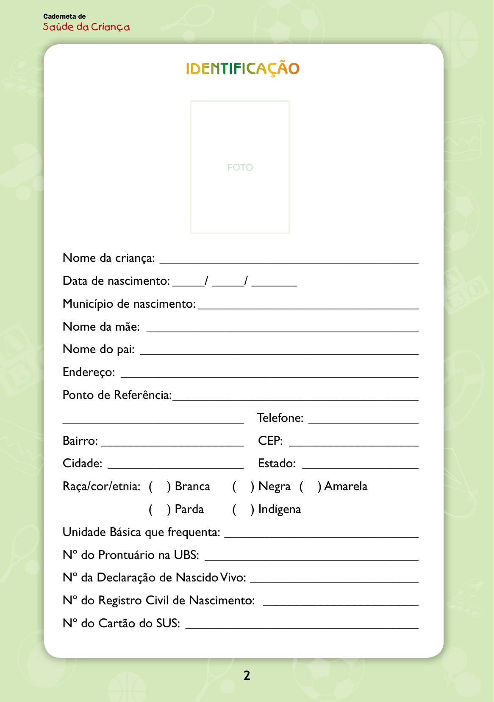
Achado: Caderneta de Saúde da Criança — página de Identificação (nome, data de nascimento, registro civil): o ponto de partida do acompanhamento longitudinal a partir do qual se calcula o esperado.
Caderneta de Saúde da Criança, 12ª ed. Ministério da Saúde, 2023 · Material oficial do MS (público)
Quiz fixação
A regra do retrospecto aplicada.
Uma criança nasceu com 3 kg e 50 cm. Pela regra, ao 1 ano deve pesar e medir aproximadamente:
Por que cada alternativa:
B) Certa. 9 kg e 75 cm: triplica o peso (3 × 3 = 9 kg) e soma ~25 cm à estatura (50 + 25 = 75 cm). A virada: a regra do retrospecto é só aplicar as duas âncoras do 1º ano — triplicação do peso e +25 cm — aos dados de nascimento.
A) 6 kg e 75 cm acerta a estatura mas usa a duplicação do peso (×2 = 6 kg), marco de ~4-6 meses, não dos 12. Por que cair: dobrar é o múltiplo mais fácil, e trocar a triplicação pela duplicação derruba só o peso.
C) 9 kg e 100 cm acerta o peso (triplicou) mas exagera a estatura: 100 cm dobraria os 50 cm, em vez de somar 25. Por que cair: aplicar "dobra" à estatura por contágio do raciocínio do peso infla a altura.
D) 6 kg e 100 cm erra os dois — duplica o peso (deveria triplicar) e dobra a estatura (deveria somar 25 cm). Aplica o múltiplo errado em ambos.
A "regra do retrospecto" da puericultura é melhor descrita como:
Por que cada alternativa:
B) Certa. É matemática aplicada às regras do crescimento normal — conhecendo os dados de nascimento e as regras (triplica, +25 cm), o esperado se calcula. A virada: pediatra não é vidente; a previsão é aritmética sobre âncoras conhecidas, não adivinhação.
A) "Intuição clínica do pediatra experiente" nega a base objetiva: a previsão não depende de feeling, e sim de contas com regras fixas. Por que cair: acertar o futuro da criança parece "tino clínico", mas qualquer um com os números chega ao mesmo valor.
C) "Exame laboratorial de previsão" inventa um exame que não existe — a previsão é cálculo, não laboratório. Por que cair: "prever" soa high-tech, mas a ferramenta aqui é multiplicação e soma.
D) "Estimativa sem base nas curvas" nega justamente a base: a regra vem das regras do crescimento normal (triplicação, +25 cm), que derivam das curvas — não é chute solto.